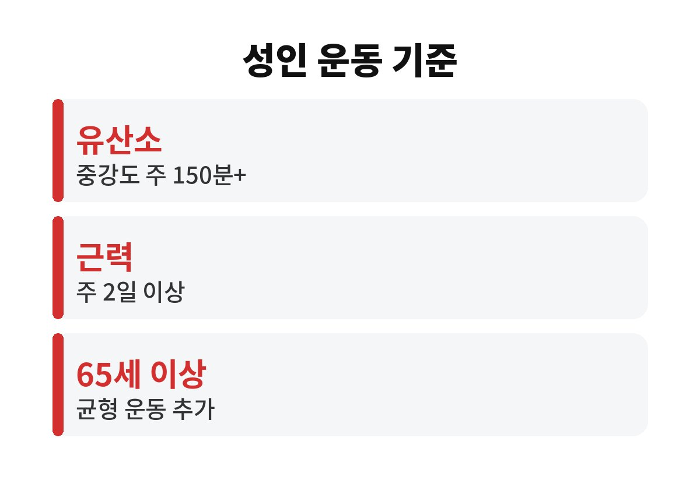
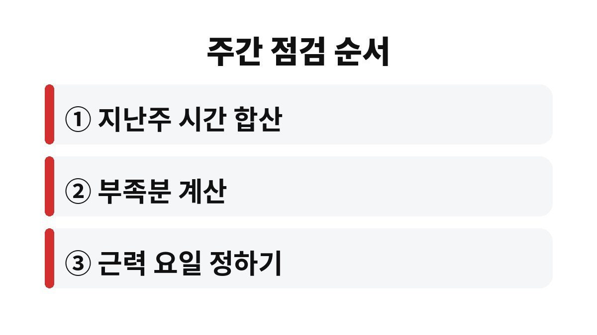

성인 운동량 기준은 WHO 권고로 주당 중강도 유산소 150~300분이고, 근력운동은 주 2일 이상이다.
WHO 유럽사무소의 신체활동 팩트시트에 실린 연령별 권고를 일주일 일정에 나눠 넣는 방식으로 풀었다.
대표적인 중강도 활동으로 평소보다 빠르게 걷기를 떠올리면 계산이 쉽다.
같은 가족이라도 연령에 따라 채워야 할 운동량이 다르다.
WHO는 18~64세 성인, 65세 이상, 5~17세 어린이와 청소년으로 나누어 권고한다.
만성질환이 있는 사람과 장애인도 가능한 범위에서 규칙적으로 움직이라고 안내한다.
WHO는 두 강도를 섞은 동등한 조합도 인정한다.
더 큰 이득을 원하면 중강도 300분 또는 고강도 150분을 넘기라고 안내하며, 이는 금기 질환이 없을 때의 이야기다.
근력운동은 주요 근육군을 모두 쓰는 중강도 이상으로 하라는 설명이 붙어 있다.
운동 시간은 숫자로 보면 짧아 보이지만 실제로 채워 보면 의외로 길다.
엘리베이터 대신 계단을 쓰거나 한 정거장 먼저 내려 걷는 시간도 모두 합산된다.
| 대상 | 유산소 | 근력·균형 |
|---|---|---|
| 18~64세 | 중강도 주 150~300분 또는 고강도 75~150분 | 근력운동 주 2일 이상 |
| 65세 이상 | 성인과 같음 | 균형·근력 포함 운동 주 3일 이상 |
| 5~17세 | 하루 평균 60분 이상 | 고강도·근육 뼈 강화 주 3일 이상 |

150분을 주 5일로 나누면 하루 30분이다.
점심 식사 뒤 15분, 퇴근길에 15분을 걸으면 하루가 채워진다.
한 번에 30분을 내기 어려운 날도 이렇게 쪼개면 부담이 줄어든다.
비 오는 날을 계산에 넣어 주 6일로 쪼개 두면 하루 25분이라 부담이 덜하다.
다만 150분은 하한선이라 시간이 되는 주에는 300분까지 늘려도 된다.
점심 15분은 회사 주변을 한 바퀴 도는 정도로 시작하면 된다.
땀이 나는 옷으로 갈아입을 필요가 없어 지속하기 수월하다.
유산소는 성인과 같고, 거기에 균형과 근력을 함께 쓰는 운동을 주 3일 이상 더한다.
WHO는 이 운동의 목적을 기능 향상과 낙상 예방으로 설명한다.
무릎이나 허리가 불편하다면 운동 종류를 정하기 전에 전문의와 먼저 상담한다.
이 연령은 계단과 욕실처럼 넘어지기 쉬운 장면을 먼저 떠올리면 어떤 운동이 필요한지 보인다.
의자 등받이를 잡고 한 발로 서 보는 동작이 흔한 예지만 이 팩트시트가 특정 동작을 정해 두지는 않았다.
5~17세는 하루 평균 60분 이상 몸을 움직이는 것이 권고다.
3~4세는 하루 180분 이상이고 그중 최소 60분은 중강도 이상이다.
숙제가 많은 날에는 놀이터에서 20분씩 세 번으로 나눠도 합이 같다.
1~2세는 강도와 상관없이 하루 180분 이상을 여러 활동으로 나눠 하라고 한다.
영아는 하루에 여러 번 움직이게 하고, 혼자 움직이지 못하면 깨어 있는 동안 엎드린 자세를 합쳐 최소 30분 하라고 안내한다.
지난주 기록이 없어도 괜찮다.
기억나는 만큼만 적어 보면 어디가 비는지 보인다.
예시로 지난주 합이 70분이었다면 이번 주에는 80분이 더 필요하다.
이를 5일에 나누면 하루 16분이다.

WHO 팩트시트에는 앉아 있는 시간을 몇 분 이내로 줄이라는 숫자가 없다.
그래서 나는 한 시간에 한 번 일어나는 정도를 내 기준으로 삼는다.
이번 주에 확인할 것은 근력운동 두 날이 달력에 들어갔는지다.
통증이 계속되거나 지병이 있다면 전문의와 상담한 뒤 강도를 정한다.
운동량은 한 주를 기준으로 채우는 것이므로 하루 못 했다고 계획을 접을 이유는 없다.
빠진 날은 다음 날 20분을 더하는 식으로 메운다.
참고 자료: WHO 유럽사무소 「Physical activity」 팩트시트(2026년 11월 확인)
※ 2026년 기준 공식 기준을 바탕으로 정리한 일반 건강 정보이며, 증상이 계속되거나 지병이 있다면 전문의와 상담하길 바란다.